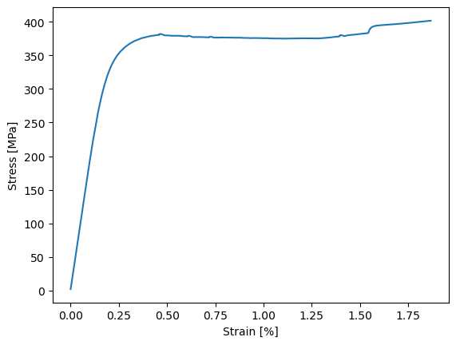

Python Interface#
On of the core strength of pyiron is the one to one mapping between the visual programming interface and the underlying Python framework. This enables collaborators with different preferences to work seamlessly together, as the same workflow can be edited from the Python interface or the visual programming interface.
Young’s Modulus#
To demonstrate this functionality we take the same Young’s Modulus example from the previous tutorial but this time rather than creating the workflow visually, we first create and evaluate it from Python before transferring it to the visual programming interface.
Again, as a reminder in Jupyter notebooks the individual cells are evaluated by pressing Shift and Enter.
Start by creating a workflow named YoungsModulusPython using the Workflow class from the pyiron_core module:
from core import Workflow
wf = Workflow("YoungsModulusPython")
After the workflow is create the next step is adding the corresponding workflow nodes. These nodes are available in the pyiron_nodes module which is located in the ~/pyiron_nodes folder in the home directory of the user to allow the user to modify and extend their pyiron_nodes. In analogy to the visual programming example four nodes are imported:
The ReadCSV node from the
pyiron_nodes.basic.filemodule.The ConvertLoadToStress node from the
pyiron_nodes.experiment.youngs_modulusmodule.The CalculateYoungsModulus node again from the
pyiron_nodes.experiment.youngs_modulusmodule.Finally, the Plot node again from the
pyiron_nodes.experiment.youngs_modulusmodule.
from pyiron_nodes.basic.file import ReadCSV
from pyiron_nodes.experiment.youngs_modulus import ConvertLoadToStress, CalculateYoungsModulus, Plot
The node functions can be handled similar to regular Python functions, with the major difference that the outputs of these Python functions have to be assigned to workflow objects. In analogy, to the visual programming construction of the Young’s modulus the ReadCSV node can be renamed by assigning it to wf.ReadDataset. In this case wf.ReadDataset is the new node created in the workflow graph.
wf.ReadDataset = ReadCSV(filename="data/dataset_1.csv")
It is important to node that nodes cannot be overwritten. When the same line is executed again pyiron_core complains and returns a ValueError: Node with label ... already exists error. This can be addressed by restarting the construction of the workflow. So typically all the commands to create a workflow are written in one Jupyter notebook cell.
wf = Workflow("YoungsModulusPython")
wf.ReadDataset = ReadCSV(filename="data/dataset_1.csv")
wf.ConvertLoadToStress = ConvertLoadToStress(df=wf.ReadDataset, area=120)
wf.CalculateYoungsModulus = CalculateYoungsModulus(
stress=wf.ConvertLoadToStress.outputs.stress,
strain=wf.ConvertLoadToStress.outputs.strain,
)
wf.Plot = Plot(
stress=wf.ConvertLoadToStress.outputs.stress,
strain=wf.ConvertLoadToStress.outputs.strain,
)
As the ReadCSV node produces only a single output the pandas Dataframe named csv it is sufficient to provide the whole node, in this case wf.ReadDataset as an input to the df parameter of the ConvertLoadToStress node. For nodes which return multiple outputs, the individual outputs can be selected with the extension outputs followed by the name of the output. So to transfer the stress and strain from the ConvertLoadToStress node to the CalculateYoungsModulus node and Plot node, you can use: wf.ConvertLoadToStress.outputs.stress and wf.ConvertLoadToStress.outputs.strain correspondingly.
To evaluate a given node call pull() for this node. For example the CalculateYoungsModulus node is evaluated using wf.CalculateYoungsModulus.pull(). Only at this point the execution of the workflow is triggered, the CSV file is loaded, the load is converted to stress and strain and afterwards those are used as inputs to calculate the Young’s Modulus.
wf.CalculateYoungsModulus.pull()
{'youngs_modulus': 175.18008476297007}
In the same way the stress strain curve can be visualized by calling pull() on the Plot node:
wf.Plot.pull()
{'fig': <Figure size 640x480 with 1 Axes>}

Finally, the same workflow can be used in the visual programming interface, by providing the workflow and the pyiron_nodes directory as additional inputs.

from core.gui import PyironFlow
PyironFlow(wf_list=[wf], nodes_path="pyiron_nodes").gui
The different workflows in the wf_list are loaded as different tabs. In case a workflow is not directly visible you can use the Refresh button in the top left menu of the canvas to refresh the visualization. Finally, to evaluate the workflow again you can click the Run button on the menu on top of the Plot node. Or alternatively, you can also evaluate one node at a time, which can be helpful for debugging.
Python Functions#
On of the core features of the pyiron workflow framework is its extendability, in particular pyiron allows you to define nodes directly inside your Jupyter notebook to simplify rapid prototyping. Again staying with the example of the Youngs modulus we define the individual Python functions using the @as_function_node decorator.
Starting with the ReadCSV node to read the CSV file and convert it to a pandas DataFrame. By adding the parameter "csv" in the as_function_node decorator the output port of the ReadCSV node is named csv.
from core import as_function_node
@as_function_node("csv")
def ReadCSV(filename: str, header: list = [0, 1], decimal: str = ",", delimiter: str = ";"):
import pandas as pd
return pd.read_csv(filename, delimiter=delimiter, header=header, decimal=decimal)
A separate naming of the output variables is commonly not necessary when only individual variables are returned. This is enabled by analysing the source code of the Python functions. For example in the ConvertLoadToStress the variables stress and strain are already defined internally and these are the only variables returned at the end of the function, consequently it is not necessary to provide any additional output name for the as_function_node decorator:
@as_function_node
def ConvertLoadToStress(df, area):
"""
Read in csv file, convert load to stress
"""
kN_to_N = 0.001 # convert kiloNewton to Newton
mm2_to_m2 = 1e-6 # convert square millimeters to square meters
df["Stress"] = df["Load"] * kN_to_N / (area * mm2_to_m2)
#although it says extensometer elongation, the values are in percent!
strain = df["Extensometer elongation"].values.flatten()
#subtract the offset from the dataset
strain = strain - strain[0]
stress = df["Stress"].values.flatten()
return stress, strain
The stress and strain values, which are outputs of the ConvertLoadToStress node are used for a linear fit in the CalculateYoungsModulus node, and the Young’s modulus is calculated as the slope of this linear fit. The calculated value of Young’s modulus will depend on the strain_cutoff parameter. Internally, this function is using the numpy package for fitting. The import statement is included in the function body to minimize the risk of conflicts.
@as_function_node
def CalculateYoungsModulus(stress, strain, strain_cutoff=0.2):
import numpy as np
percent_to_fraction = 100 # convert
MPa_to_GPa = 1 / 1000 # convert MPa to GPa
arg = np.argsort(np.abs(np.array(strain) - strain_cutoff))[0]
fit = np.polyfit(strain[:arg], stress[:arg], 1)
youngs_modulus = fit[0] * percent_to_fraction * MPa_to_GPa
return youngs_modulus
Finally, the Plot node is defined, which internally uses the matplotlib library to create an xy-plot of the stress over strain curve.
@as_function_node("fig")
def Plot(stress, strain, format="-"):
import matplotlib.pyplot as plt
fig, ax = plt.subplots()
ax.plot(strain, stress, format)
ax.set_xlabel("Strain [%]")
ax.set_ylabel("Stress [MPa]")
return fig
With these four functions the workflow can again be constructed in analogy to the previous section and the same workflow can also again be loaded in the visual programming interface to share it with users who prefer the visual programming interface.
wf = Workflow("YoungsModulusFunction")
wf.ReadDataset = ReadCSV(filename="data/dataset_1.csv")
wf.ConvertLoadToStress = ConvertLoadToStress(df=wf.ReadDataset, area=120)
wf.CalculateYoungsModulus = CalculateYoungsModulus(
stress=wf.ConvertLoadToStress.outputs.stress,
strain=wf.ConvertLoadToStress.outputs.strain,
)
wf.Plot = Plot(
stress=wf.ConvertLoadToStress.outputs.stress,
strain=wf.ConvertLoadToStress.outputs.strain,
)
wf.Plot.pull()
{'fig': <Figure size 640x480 with 1 Axes>}
From Functions to Modulus#
If you use the file browser in jupyter lab and navigate to the pyiron_nodes folder and inside open the subfolder experiment and the Python file youngs_modulus.py then you see that the nodes we defined in the Jupyter notebook are exactly the same as the ones which are used in the Node Library of the visual programming interface. More specifically, you can simply add your own nodes to the local Node Library by using the @as_function_node decorator and placing them in the pyiron_nodes folder.
For development purposes it might even be helpful to create a separate folder in the pyiron_nodes or a standalone nodes library for you project. All you have to do to load nodes from a different location on the file system is to change the nodes_path when you initialize the visual programming interface. This highlights the extendability of the pyiron workflow framework.